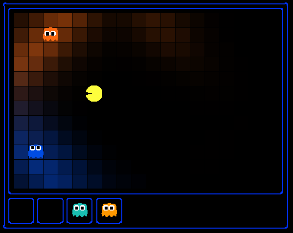
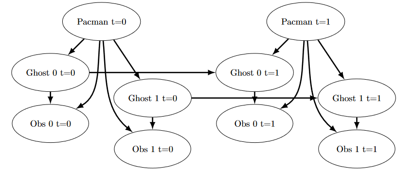
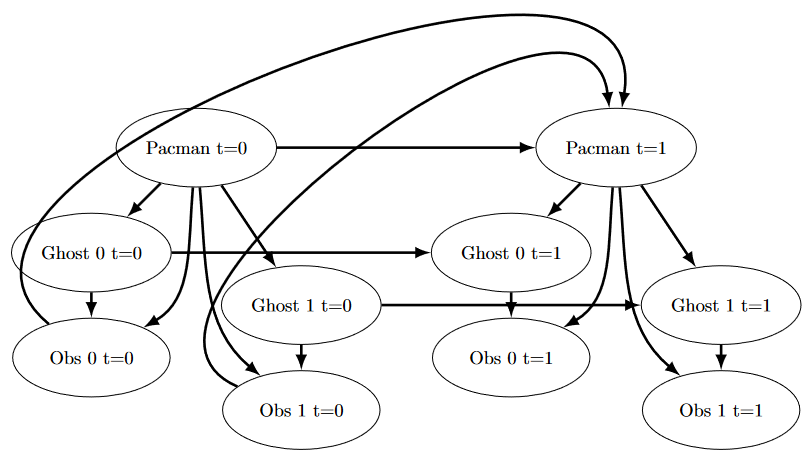

Lab6 - Ghostbusters parte 2
Fecha de entrega: jueves, 25 de junio, 11:55 PM PT

Puedo escucharte, fantasma. Correr no te salvará de mi ¡Filtro de partículas!
Tabla de Contenidos
- Archivos necesarios
- Introducción
- Exploración de archivos
- Q6: Inferencia Exacta - Observación
- Q7: Inferencia Exacta con Paso de Tiempo
- Q8: Prueba Completa de Inferencia Exacta
- Q9: Inicialización y Creencias de Inferencia Aproximada
- Q10: Observación de Inferencia Aproximada
- Q11: Inferencia Aproximada con Paso de Tiempo
- Entrega
Archivos necesarios
Este laboratorio es una continuación directa del Lab 5: Ghostbusters Parte 1, por lo que debes continuar con los archivos de ese laboratorio. Si no has completado ese laboratorio, debes hacerlo antes de entregar este.
Introducción
Pacman pasa su vida huyendo de los fantasmas, pero las cosas no siempre fueron así. La leyenda dice que hace muchos años, el bisabuelo de Pacman, Grandpac, aprendió a cazar fantasmas por deporte. Sin embargo, fue cegado por su poder y solo podía rastrear a los fantasmas por sus ruidos y estruendos.
En este proyecto, diseñarás agentes Pacman que usan sensores para localizar y comer fantasmas invisibles. Avanzarás desde la localización de fantasmas individuales estacionarios hasta la caza de grupos de múltiples fantasmas en movimiento con eficiencia implacable.
Este proyecto incluye un autograder para que califiques tus respuestas en tu máquina. Se puede ejecutar en todas las preguntas con el comando:
python autograder.py
Se puede ejecutar para una pregunta particular, como q2, con:
python autograder.py -q q2
Se puede ejecutar para una prueba particular con comandos de la forma:
python autograder.py -t test_cases/q2/1-bridge-grid
Exploración de archivos
El código de este proyecto consiste en varios archivos de Python, algunos de los cuales deberás leer y entender para completar la tarea, y algunos de los cuales puedes ignorar.
Archivos que vas a editar
| Archivo | Descripción |
|---|---|
| bustersAgents.py | Agentes para jugar la variante Ghostbusters de Pacman. |
| inference.py | Código para rastrear fantasmas a lo largo del tiempo usando sus sonidos. |
| factorOperations.py | Operaciones para calcular nuevas tablas de probabilidad conjunta o marginalizada. |
Archivos que quizás quieras revisar
| Archivo | Descripción |
|---|---|
| bayesNet.py | Las clases BayesNet y Factor. |
Archivos de soporte que puedes ignorar
| Archivo | Descripción |
|---|---|
| busters.py | La entrada principal a Ghostbusters (reemplaza Pacman.py). |
| bustersGhostAgents.py | Nuevos agentes fantasma para Ghostbusters. |
| distanceCalculator.py | Calcula distancias en el laberinto, almacena los resultados en caché para evitar recalcularlos. |
| game.py | Funcionamiento interno y clases auxiliares para Pacman. |
| ghostAgents.py | Agentes para controlar los fantasmas. |
| graphicsDisplay.py | Gráficos para Pacman. |
| graphicsUtils.py | Soporte para los gráficos de Pacman. |
| keyboardAgents.py | Interfaces de teclado para controlar a Pacman. |
| layout.py | Código para leer archivos de diseño y almacenar su contenido. |
| util.py | Funciones de utilidad. |
Temas necesarios para este proyecto
- Probabilidad
- Representación de Redes de Bayes
- Inferencia en Redes de Bayes
- HMMs (Modelos Ocultos de Markov)
- Filtrado de Partículas
Q6: Inferencia Exacta - Observación
En esta pregunta, implementarás el método
observeUpdate
en la clase ExactInference de inference.py para actualizar correctamente la distribución de creencia del agente sobre las posiciones de los fantasmas dada una observación de los sensores de Pacman. Estás implementando la actualización de creencia en línea al observar nueva evidencia. El método observeUpdate debe actualizar la creencia en cada posición del mapa después de recibir una lectura del sensor, iterando sobre self.allPositions. Las creencias se almacenan como un objeto DiscreteDistribution en self.beliefs, que debes actualizar.
Antes de escribir cualquier código, escribe la ecuación del problema de inferencia que estás tratando de resolver. Debes usar la función
self.getObservationProb
, que devuelve la probabilidad de una observación dada la posición de Pacman, una posición potencial del fantasma y la posición de la cárcel. Puedes obtener la posición de Pacman usando gameState.getPacmanPosition(), y la posición de la cárcel usando self.getJailPosition().
En la visualización de Pacman, las creencias posteriores altas se representan con colores brillantes, mientras que las creencias bajas se representan con colores tenues. Debes comenzar con una gran nube de creencia que se reduce con el tiempo a medida que se acumula más evidencia. Al observar los casos de prueba, asegúrate de entender cómo los cuadrados convergen a su coloración final.
Nota
Tus agentes busters tienen un módulo de inferencia separado para cada fantasma que están rastreando. Por eso, si imprimes una observación dentro de la función observeUpdate, solo verás un número aunque pueda haber múltiples fantasmas en el tablero.
Calificación: Para ejecutar el autograder para esta pregunta y visualizar la salida:
python autograder.py -q q6
Si deseas ejecutar esta prueba (o cualquiera de las otras pruebas) sin gráficos, puedes agregar la siguiente bandera:
python autograder.py -q q6 --no-graphics
Q7: Inferencia Exacta con Paso de Tiempo
En la pregunta anterior implementaste actualizaciones de creencia para Pacman basadas en sus observaciones. Afortunadamente, las observaciones de Pacman no son su única fuente de conocimiento sobre dónde puede estar un fantasma. Pacman también tiene conocimiento sobre las formas en que un fantasma puede moverse; concretamente, que el fantasma no puede atravesar paredes ni moverse más de un espacio en un paso de tiempo.
Para entender por qué esto es útil para Pacman, considera el siguiente escenario en el que hay Pacman y un Fantasma. Pacman recibe muchas observaciones que indican que el fantasma está muy cerca, pero luego una que indica que el fantasma está muy lejos. La lectura que indica que el fantasma está muy lejos probablemente sea el resultado de un sensor defectuoso. El conocimiento previo de Pacman sobre cómo puede moverse el fantasma disminuirá el impacto de esta lectura ya que Pacman sabe que el fantasma no podría haberse movido tan lejos en un solo movimiento.
En esta pregunta, implementarás el método
elapseTime
en ExactInference. El paso elapseTime debe actualizar la creencia en cada posición del mapa después de que transcurra un paso de tiempo. Tu agente tiene acceso a la distribución de acción del fantasma a través de self.getPositionDistribution. Para obtener la distribución sobre nuevas posiciones para el fantasma, dada su posición anterior, usa esta línea de código:
newPosDist = self.getPositionDistribution(gameState, oldPos)
Donde oldPos se refiere a la posición anterior del fantasma. newPosDist es un objeto DiscreteDistribution, donde para cada posición p en self.allPositions, newPosDist[p] es la probabilidad de que el fantasma esté en la posición p en el tiempo t+1, dado que el fantasma está en la posición oldPos en el tiempo t. Ten en cuenta que esta llamada puede ser bastante costosa, por lo que si tu código se agota el tiempo, considera si puedes reducir el número de llamadas a self.getPositionDistribution.
Antes de escribir cualquier código, escribe la ecuación del problema de inferencia que estás tratando de resolver. Para probar tu implementación de predict de forma independiente a tu implementación de update en la pregunta anterior, esta pregunta no hará uso de tu implementación de update.
Dado que Pacman no está observando las acciones del fantasma, estas acciones no impactarán las creencias de Pacman. Con el tiempo, las creencias de Pacman vendrán a reflejar lugares en el tablero donde cree que es más probable que estén los fantasmas dada la geometría del tablero y los posibles movimientos legales de los fantasmas, que Pacman ya conoce.
Para las pruebas en esta pregunta, a veces usaremos un fantasma con movimientos aleatorios y otras veces usaremos el GoSouthGhost. Este fantasma tiende a moverse hacia el sur, por lo que con el tiempo y sin observaciones, la distribución de creencia de Pacman debería comenzar a enfocarse alrededor de la parte inferior del tablero. Para ver qué fantasma se usa en cada caso de prueba, puedes mirar los archivos .test.
El siguiente diagrama muestra la Red de Bayes / Modelo Oculto de Markov para lo que está ocurriendo. Aun así, debes basarte en la descripción anterior para la implementación porque algunas partes están implementadas para ti (es decir, getPositionDistribution está abstraído para ser P(Gt+1 ∣ gameState, Gt)).

Calificación: Para ejecutar el autograder para esta pregunta y visualizar la salida:
python autograder.py -q q7
Si deseas ejecutar esta prueba (o cualquiera de las otras pruebas) sin gráficos, puedes agregar la siguiente bandera:
python autograder.py -q q7 --no-graphics
Mientras observas la salida del autograder, recuerda que los cuadrados más claros indican que Pacman cree que es más probable que un fantasma ocupe esa ubicación, y los cuadrados más oscuros indican que es menos probable que un fantasma ocupe esa ubicación. ¿Para cuáles de los casos de prueba notas diferencias que emergen en el sombreado de los cuadrados? ¿Puedes explicar por qué algunos cuadrados se vuelven más claros y otros más oscuros?
Q8: Prueba Completa de Inferencia Exacta
Ahora que Pacman sabe cómo usar tanto su conocimiento previo como sus observaciones para determinar dónde está un fantasma, está listo para cazar fantasmas por su cuenta. Usaremos tus implementaciones de observeUpdate y elapseTime juntas para mantener una distribución de creencia actualizada, y tu agente codicioso simple elegirá una acción basada en las últimas distribuciones en cada paso de tiempo. En la estrategia codiciosa simple, Pacman asume que cada fantasma está en su posición más probable según sus creencias, luego se mueve hacia el fantasma más cercano. Hasta este punto, Pacman se ha movido seleccionando aleatoriamente una acción válida.
Implementa el método
chooseAction
en GreedyBustersAgent en bustersAgents.py. Tu agente primero debe encontrar la posición más probable de cada fantasma no capturado restante, luego elegir una acción que minimice la distancia del laberinto al fantasma más cercano.
Para encontrar la distancia del laberinto entre dos posiciones pos1 y pos2, usa
self.distancer.getDistance(pos1, pos2)
. Para encontrar la posición sucesora de una posición después de una acción:
successorPosition = Actions.getSuccessor(position, action)
Se te proporciona livingGhostPositionDistributions, una lista de objetos DiscreteDistribution que representan las distribuciones de creencia de posición para cada uno de los fantasmas que aún no han sido capturados.
Si está implementado correctamente, tu agente debería ganar el juego en q8/3-gameScoreTest con una puntuación mayor a 700 al menos 8 de cada 10 veces. Nota: el autograder también verificará la corrección de tu inferencia directamente, pero el resultado de los juegos es una verificación de cordura razonable.
Podemos representar cómo funciona nuestro agente codicioso con la siguiente modificación al diagrama anterior:

Calificación: Para ejecutar el autograder para esta pregunta y visualizar la salida:
python autograder.py -q q8
Si deseas ejecutar esta prueba (o cualquiera de las otras pruebas) sin gráficos, puedes agregar la siguiente bandera:
python autograder.py -q q8 --no-graphics
Q9: Inicialización y Creencias de Inferencia Aproximada
La inferencia aproximada está muy de moda entre los cazadores de fantasmas esta temporada. Para las siguientes preguntas, implementarás un algoritmo de filtrado de partículas para rastrear un solo fantasma.
Primero, implementa las funciones
initializeUniformly
y
getBeliefDistribution
en la clase ParticleFilter en inference.py. Una partícula (muestra) es una posición del fantasma en este problema de inferencia. Ten en cuenta que, para la inicialización, las partículas deben distribuirse uniformemente (no aleatoriamente) en las posiciones legales para garantizar una distribución previa uniforme. Recomendamos pensar en cómo el operador módulo es útil para initializeUniformly.
Ten en cuenta que la variable donde almacenas tus partículas debe ser una lista. Una lista es simplemente una colección de variables sin peso (posiciones en este caso). Almacenar tus partículas en cualquier otro tipo de dato, como un diccionario, es incorrecto y producirá errores. El método getBeliefDistribution luego toma la lista de partículas y la convierte en un objeto DiscreteDistribution.
Calificación: Para probar tu código y ejecutar el autograder para esta pregunta:
python autograder.py -q q9
Q10: Observación de Inferencia Aproximada
A continuación, implementaremos el método
observeUpdate
en la clase ParticleFilter en inference.py. Este método construye una distribución de peso sobre self.particles donde el peso de una partícula es la probabilidad de la observación dada la posición de Pacman y la ubicación de esa partícula. Luego, re-muestreamos de esta distribución ponderada para construir nuestra nueva lista de partículas.
Debes volver a usar la función
self.getObservationProb
para encontrar la probabilidad de una observación dada la posición de Pacman, una posición potencial del fantasma y la posición de la cárcel. El método sample de la clase DiscreteDistribution también será útil. Como recordatorio, puedes obtener la posición de Pacman usando gameState.getPacmanPosition(), y la posición de la cárcel usando self.getJailPosition().
Hay un caso especial que una implementación correcta debe manejar. Cuando todas las partículas reciben peso cero, la lista de partículas debe reiniciarse llamando a
initializeUniformly
. El método total de DiscreteDistribution puede ser útil.
Calificación: Para ejecutar el autograder para esta pregunta y visualizar la salida:
python autograder.py -q q10
Si deseas ejecutar esta prueba (o cualquiera de las otras pruebas) sin gráficos, puedes agregar la siguiente bandera:
python autograder.py -q q10 --no-graphics
Q11: Inferencia Aproximada con Paso de Tiempo
Implementa la función
elapseTime
en la clase ParticleFilter en inference.py. Esta función debe construir una nueva lista de partículas que corresponda a cada partícula existente en self.particles avanzando un paso de tiempo, y luego asignar esta nueva lista de vuelta a self.particles. Cuando esté completa, deberías poder rastrear fantasmas casi tan efectivamente como con la inferencia exacta.
Ten en cuenta que en esta pregunta, probaremos tanto la función elapseTime de forma aislada, como la implementación completa del filtro de partículas combinando elapseTime y observe.
Al igual que en el método elapseTime de la clase ExactInference, debes usar:
newPosDist = self.getPositionDistribution(gameState, oldPos)
Esta línea de código obtiene la distribución sobre nuevas posiciones para el fantasma, dada su posición anterior (oldPos). El método sample de la clase DiscreteDistribution también será útil.
Calificación: Para ejecutar el autograder para esta pregunta y visualizar la salida:
python autograder.py -q q11
Si deseas ejecutar esta prueba (o cualquiera de las otras pruebas) sin gráficos, puedes agregar la siguiente bandera:
python autograder.py -q q11 --no-graphics
Ten en cuenta que incluso sin gráficos, esta prueba puede tardar varios minutos en ejecutarse.
Entrega
El entregable será un archivo zip con el número de laboratorio seguido de tu ID (ejemplo: Lab6-20123456.zip) que contenga todos los archivos del laboratorio completados exitosamente. No olvides verificar que completaste el laboratorio correctamente usando la herramienta de autograder proporcionada para este laboratorio.